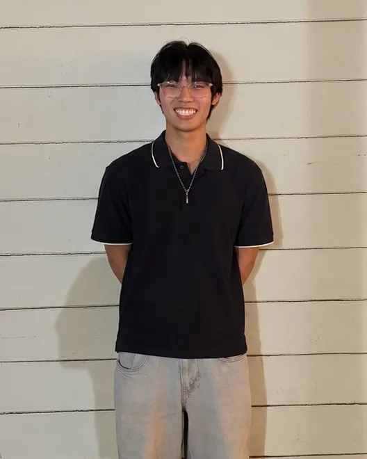
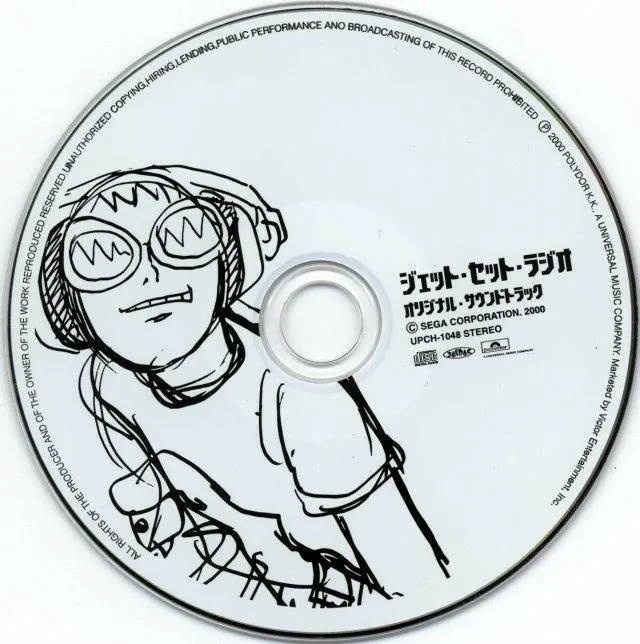
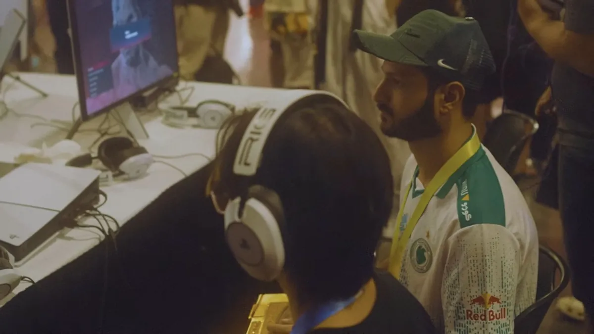
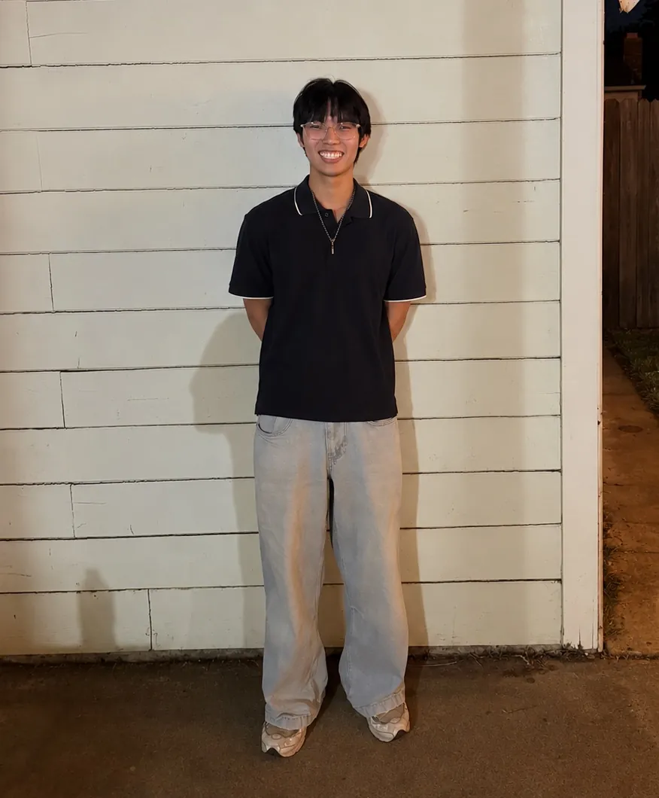

Hi, I'm Anthony
I'm a design student at UC Davis, originally from Roseville, California. I started out as a computer science major and spent two years there, but I've always been drawn to creative things. I've been producing music for over 8 years, and I first started designing to make the graphics for my own music.
Now I get to combine the technical thinking I picked up from CS with the creative side of music that I love, and design is where those two meet.
When I'm not in Figma you'll catch me on FL Studio, out on a run, or losing a Tekken match.
Outside design

My work1 / 6 10dollar
0:00
1:31

vs ATIF at EVO
meHobbies
Music production
Design
Consuming energy drinks
Games
Running
Sports
Traveling
Currently working on
SchoolFinal year of design at UC Davis
Searching for internshipsProduct and UX, open to remote
A new albumSlowly, one loop at a time